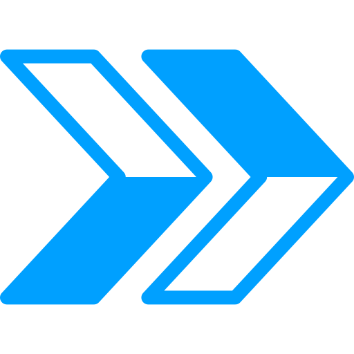

-
Analista de Redes - Stefanini Group
Fevereiro/2024 - Atualmente
Análise de perfis de perdas envolvendo roteadores, switches e access points da rede de dados e internet do cliente e estudos de confiabilidade e qualidade, que são importantes para manter a cadeia produtiva da empresa.
A partir desses estudos, como exemplo, consegui mapear a necessidade de implementar link e geradores redundantes, para que equipamentos conectados à rede não deixem de operar. Evitando assim, a paralisação da pesagem do minério que é de 120 mil toneladas por hora. Mantendo o escoamento desse minério, cujo valor de venda é de 95 dólares a tonelada ($11.400.000,00).
-
Analista de Suporte Sênior - MAMInfo
Junho/2022 - Junho/2023
Realizar análises de desempenho dos serviços prestados pelas operadoras contratadas, realizando testes de performance nos links de dados do Banco do Nordeste.
A partir dessas análises, interagir com especialistas para solucionar problemas encontrados, evitando que o sistemas bancários deixem de operar, e não gerando prejuízos financeiros.
A rede bancária conta com mais de 1000 links de dados em suas agências, com isso, desempenhei as funções com bastante agilidade e cumprindo prazos contratuais.